runs / 2026-10-18 / 125203-034000-baseline-13cb2511
五重塔ボクセル庭園を単一HTMLで55分強で完成、過半は検証と修正
qwen3.8-flash-next-unsloth-ud-q4_k_xl（thinking: high）が113コール・3,349秒でpagoda-garden.html（43,606バイト）を作成し、exit 0で完了した。初回3コールで全ファイルを書き・書き直した後、残り110コールはブラウザでの検証と、水面・黒化ボクセル・カメラ・照明の修正に費やした。edit拒否18件、eval例外1件、bash失敗1件はいずれもその場で復旧し、#112のtodoクローズで終えた。
成果物
work/pagoda-garden.html（43,606 バイト）をそのまま同梱している。重いシーンもあるため、必要なときだけ起動する。
pagoda-garden.html
43 KB · 起動するまで読み込まない
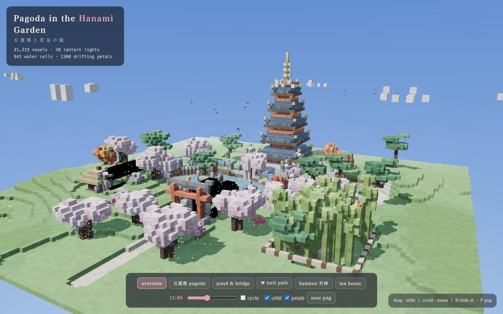
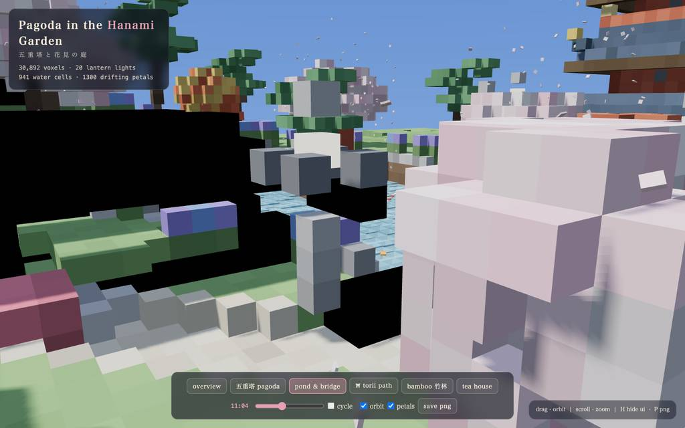
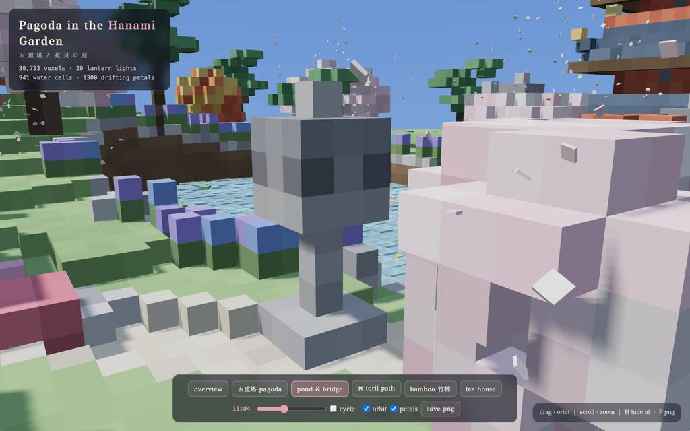
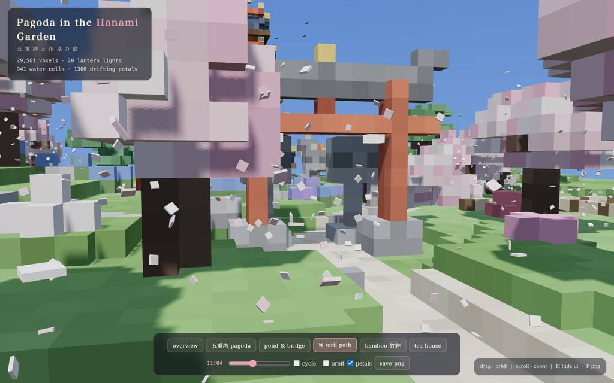
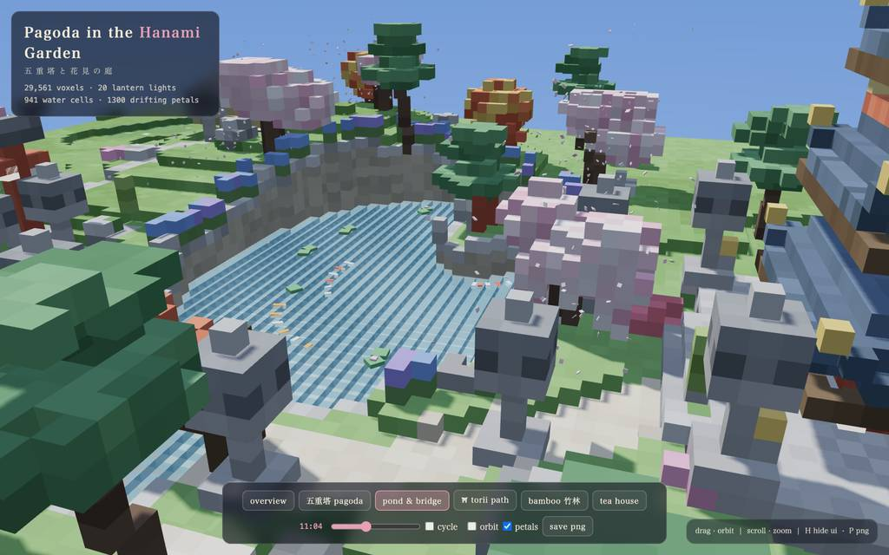
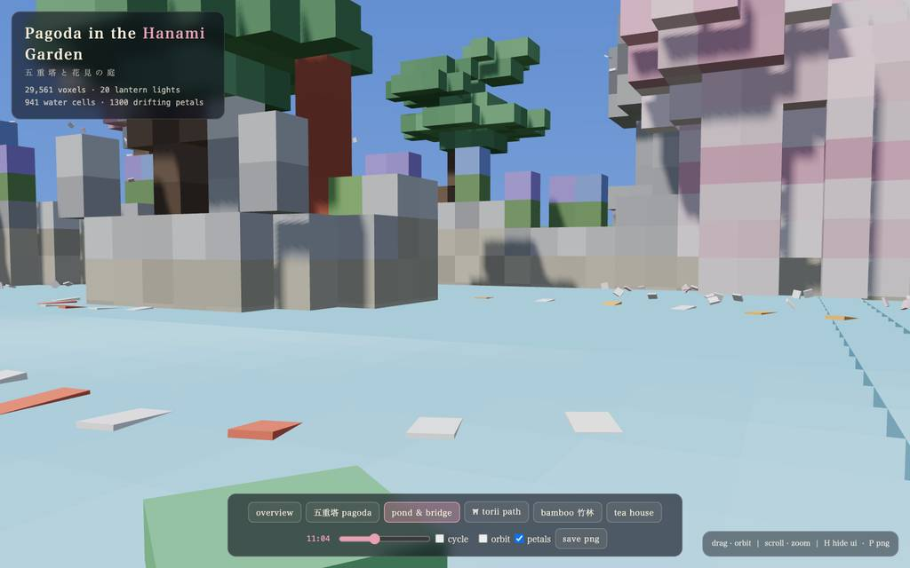
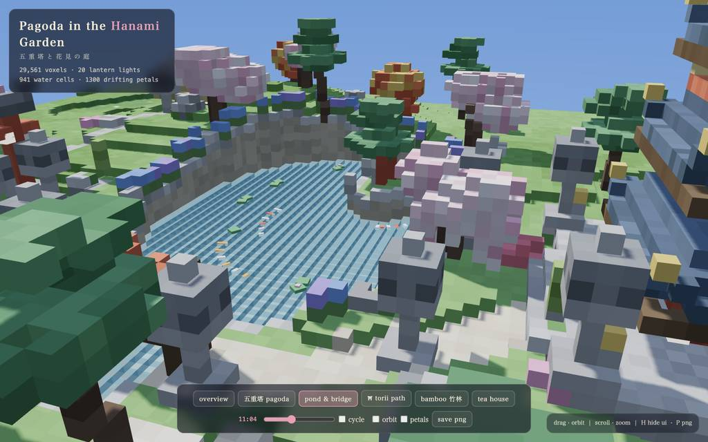
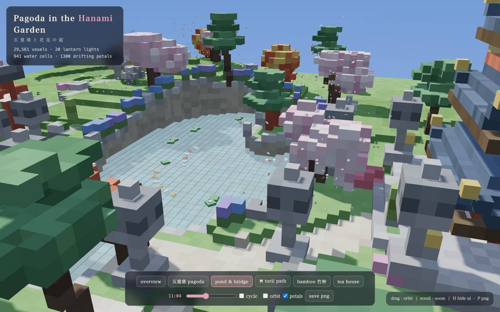
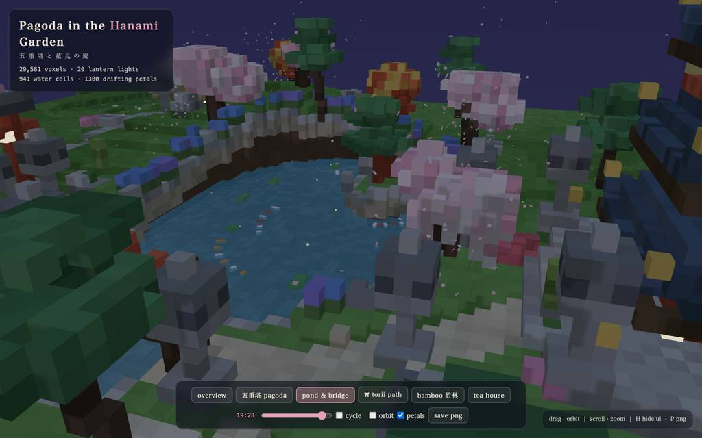
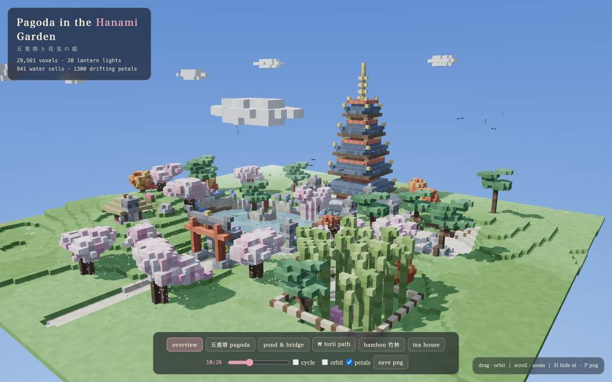
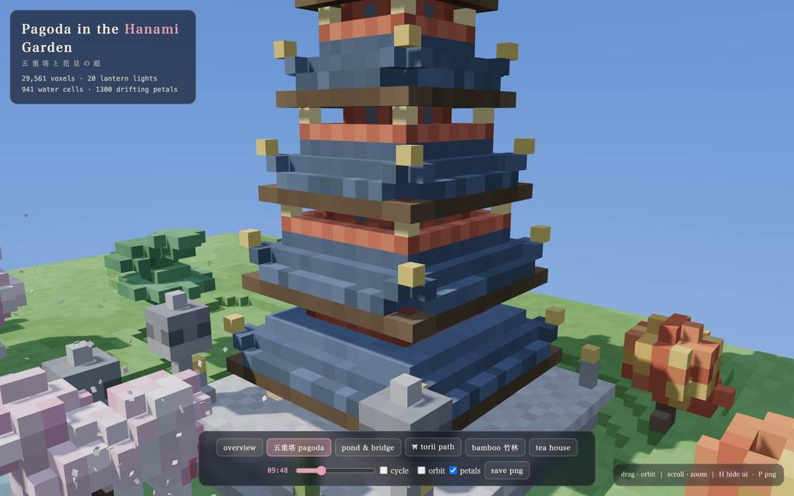
全 36 枚から等間隔に 12 枚を選んでいる。logs/events.jsonl の画像ブロックを内容ハッシュで重複排除して時系列に並べた、制作中の検証用スクリーンショット。最終版とは限らない。
成果物の構成
| 要素 | 内容 |
|---|---|
| 成果物構成 | 単一自己完結HTML（pagoda-garden.html、43,606バイト）。three.jsはCDNのimport map経由、シード付きノイズで全要素を手続き生成し毎回同一のシーン。 |
| voxel 規模 | 最終報告では約29,600個の生成voxelと記載。 |
| 五重塔 | 市松の石畳広場上の五重塔。朱の柱、戸・窓スリット付き漆喰壁、反り屋根3層と金縁、上層の balcony、金製相輪、軒下ランタン。 |
| 池と島 | ノイズ縁取りの池＋東の入り江、砂底と石縁、島に白頂岩・稲荷社・松、月見橋（朱の欄干付き拱橋）が架かる。 |
| 庭園施設 | 石灯籠と砂利道が通る鳥居参道、茶屋、 concentric に砂紋を描く禅園、竹藪（縄柵とゲート）。 |
| 植生 | 枝垂れ2本含む桜11本、モミジ、雲形に刈り込んだ松、竹、 азalea、菖蒲、スイレン、野花、苔。 |
| 動的要素 | 風で揺れ水面に着地し再生成される花びら1,300、2種の模様の手泳ぐコイ4、昼の鳥群、流雲、夜のホタル、スライダー／自動の昼夜サイクル（太陽軌道、空、霧、星、ランタン発光、点光源4）。 |
| UI・検証 | 6ランドマークのfly-to、時刻スライダー、orbit/花びら切替、PNG保存、HでHUD非表示。実ブラウザでコンソールエラーゼロ、4時刻×6カメラでスクリーンショット検証済み。 |
モデルの最終メッセージから読み取った内容。コードの確認はしていない。
タイムライン
113 回の API 呼び出しを時間順に並べた。上段の帯の幅が各呼び出しの所要時間で、帯の間の空白がツールの実行時間。下段はその時点のコンテキスト長。
最も長い 2 回の生成（#3 545 秒・#2 329 秒）で 873.9 秒、壁時計の 26.1%。出力トークンの上位 4 回（#3・#2・#1・#15）で全体の 48.5%（70,707 / 145,900）。推論以外（ツール実行など）は約 180 秒（5%）。
フェーズ別の内訳
| フェーズ | 経過 | 所要 | 全体に占める割合 | 呼び出し | 出力 tok | 何をしたか |
|---|---|---|---|---|---|---|
| 初期生成 | 0:00–20:00 | 1200 秒 | 35.8% | 3 | 68,185 | #1で計画と検証APIの習得、#2で単一ファイルを書き、#3で全文を書き直した。3コールだけで1,199.6秒・68,185トークンを消費。 |
| 初回検証修正 | 20:00–25:43 | 343 秒 | 10.3% | 18 | 15,299 | #4でコンソール確認後、水・竹・雲・視点・柵のゲート修正を反復。E1・E2でeditが2度拒否され、bash/readで行特定してから再編集した。 |
| 黒化ボクセル調査 | 25:43–33:20 | 457 秒 | 13.7% | 19 | 20,104 | 池の黒い領域をレイトキャスト・NaN色収集・パレットdiffで追跡し、rect/boxの引数個数バグと判明。#36〜#39で修正し#40で解消を確認した。 |
| 池と視点作り込み | 33:20–40:16 | 416 秒 | 12.4% | 27 | 12,041 | 池のフレーミングとパレット強化、花びらが水面に着地する挙動追加、鳥居・竹藪・茶屋のカメラ位置を各2〜4回のeditで調整。拒否とリトライが頻発した。 |
| 水面の張直し | 40:16–47:11 | 415 秒 | 12.4% | 20 | 13,898 | 水のモアレをフリーズ・不透明度1・カメラ水位の実験で切り分け、壁面のあるスラブを薄板状に作り直して解消した。仮デバッグフックの除去もここで完了。 |
| 昼夜と光の調整 | 47:11–52:45 | 334 秒 | 10.0% | 18 | 10,208 | 水深と浜帯の微調整、太陽高度と空パレットの整合、夜間ランタンの発光を3段強化。#100のbash確認で残存デバッグコードなしを裏取りした。 |
| 最終確認 | 52:45–55:47 | 182 秒 | 5.4% | 8 | 6,165 | ランタン火袋のピクセルズーム確認に3コールかけ、深夜＋五重塔の最終スクリーンショット後、タブ整理とtodoクローズで完了した。 |
フェーズの切れ目は、ログから読み取れる作業内容の変わり目（LLM による区切り）。所要時間は、そのフェーズの最初の呼び出しの開始から次のフェーズの最初の呼び出しの開始まで。
113 回の呼び出しを表で見る
| # | 種別 | フェーズ | 開始 | 所要 秒 | prompt | うち cache | 出力 | tok/s | HTTP | ツール |
|---|---|---|---|---|---|---|---|---|---|---|
| 1 | 主ループ | 初期生成 | 0:00 | 325.6 | 7,800 | 7,619 | 16,597 | 51.1 | 200 | todo + read |
| 2 | 主ループ | 初期生成 | 5:26 | 328.9 | 27,676 | 24,396 | 20,259 | 62.0 | 200 | write |
| 3 | 主ループ | 初期生成 | 10:55 | 545.1 | 47,981 | 27,671 | 31,329 | 58.3 | 200 | write |
| 4 | 主ループ | 初回検証修正 | 20:00 | 19.4 | 79,356 | 47,976 | 332 | 53.5 | 200 | eval |
| 5 | 主ループ | 初回検証修正 | 20:24 | 30.6 | 80,583 | 79,689 | 1,374 | 47.4 | 200 | eval |
| 6 | 主ループ | 初回検証修正 | 20:57 | 39.7 | 82,760 | 81,958 | 1,824 | 47.8 | 200 | read |
| 7 | 主ループ | 初回検証修正 | 21:37 | 38.6 | 85,150 | 82,755 | 2,039 | 55.8 | 200 | edit |
| 8 | 主ループ | 初回検証修正 | 22:16 | 5.6 | 87,814 | 87,190 | 203 | 47.8 | 200 | bash |
| 9 | 主ループ | 初回検証修正 | 22:22 | 3.4 | 88,308 | 88,016 | 152 | 62.6 | 200 | read |
| 10 | 主ループ | 初回検証修正 | 22:25 | 5.0 | 88,917 | 88,460 | 206 | 54.3 | 200 | read |
| 11 | 主ループ | 初回検証修正 | 22:30 | 14.7 | 89,833 | 89,127 | 673 | 50.2 | 200 | bash |
| 12 | 主ループ | 初回検証修正 | 22:45 | 19.8 | 90,616 | 90,505 | 1,080 | 56.9 | 200 | edit |
| 13 | 主ループ | 初回検証修正 | 23:05 | 15.5 | 92,010 | 91,697 | 898 | 62.3 | 200 | edit |
| 14 | 主ループ | 初回検証修正 | 23:20 | 5.3 | 94,254 | 92,907 | 189 | 52.9 | 200 | eval |
| 15 | 主ループ | 初回検証修正 | 23:33 | 53.1 | 95,247 | 94,445 | 2,522 | 48.9 | 200 | edit |
| 16 | 主ループ | 初回検証修正 | 24:26 | 8.4 | 97,964 | 97,770 | 370 | 49.8 | 200 | edit |
| 17 | 主ループ | 初回検証修正 | 24:35 | 36.2 | 98,514 | 98,336 | 1,968 | 55.8 | 200 | edit |
| 18 | 主ループ | 初回検証修正 | 25:11 | 6.1 | 100,700 | 100,481 | 277 | 55.6 | 200 | edit |
| 19 | 主ループ | 初回検証修正 | 25:17 | 13.2 | 101,120 | 100,978 | 655 | 53.1 | 200 | edit |
| 20 | 主ループ | 初回検証修正 | 25:31 | 9.0 | 102,164 | 101,778 | 420 | 53.3 | 200 | edit |
| 21 | 主ループ | 初回検証修正 | 25:40 | 3.6 | 102,841 | 102,586 | 117 | 46.3 | 200 | todo |
| 22 | 主ループ | 黒化ボクセル調査 | 25:43 | 11.8 | 103,234 | 102,958 | 586 | 54.4 | 200 | todo + todo + todo + todo + todo + eval |
| 23 | 主ループ | 黒化ボクセル調査 | 26:02 | 50.0 | 105,640 | 103,822 | 2,260 | 47.0 | 200 | edit |
| 24 | 主ループ | 黒化ボクセル調査 | 26:53 | 7.2 | 108,093 | 107,900 | 332 | 52.9 | 200 | eval |
| 25 | 主ループ | 黒化ボクセル調査 | 27:07 | 41.3 | 109,229 | 108,424 | 1,985 | 50.0 | 200 | eval |
| 26 | 主ループ | 黒化ボクセル調査 | 27:48 | 8.4 | 111,358 | 111,216 | 453 | 59.5 | 200 | eval |
| 27 | 主ループ | 黒化ボクセル調査 | 27:57 | 17.2 | 111,829 | 111,810 | 918 | 54.7 | 200 | eval |
| 28 | 主ループ | 黒化ボクセル調査 | 28:14 | 11.3 | 112,765 | 112,746 | 600 | 54.9 | 200 | eval |
| 29 | 主ループ | 黒化ボクセル調査 | 28:26 | 19.7 | 113,667 | 113,364 | 983 | 52.3 | 200 | eval |
| 30 | 主ループ | 黒化ボクセル調査 | 28:49 | 61.9 | 114,978 | 79,351 | 2,365 | 50.6 | 200 | eval |
| 31 | 主ループ | 黒化ボクセル調査 | 29:51 | 25.1 | 117,682 | 117,343 | 1,202 | 49.7 | 200 | bash |
| 32 | 主ループ | 黒化ボクセル調査 | 30:16 | 30.7 | 118,902 | 118,886 | 1,396 | 46.2 | 200 | edit |
| 33 | 主ループ | 黒化ボクセル調査 | 30:46 | 8.1 | 120,497 | 120,300 | 342 | 48.7 | 200 | eval |
| 34 | 主ループ | 黒化ボクセル調査 | 30:58 | 44.0 | 120,934 | 120,840 | 2,240 | 51.6 | 200 | eval |
| 35 | 主ループ | 黒化ボクセル調査 | 31:42 | 43.7 | 123,474 | 123,176 | 2,298 | 53.8 | 200 | bash |
| 36 | 主ループ | 黒化ボクセル調査 | 32:26 | 10.4 | 126,091 | 125,771 | 518 | 55.2 | 200 | edit |
| 37 | 主ループ | 黒化ボクセル調査 | 32:37 | 12.4 | 127,045 | 126,609 | 576 | 51.5 | 200 | edit |
| 38 | 主ループ | 黒化ボクセル調査 | 32:49 | 11.6 | 128,505 | 127,622 | 499 | 49.5 | 200 | bash |
| 39 | 主ループ | 黒化ボクセル調査 | 33:01 | 4.5 | 129,752 | 129,003 | 164 | 51.8 | 200 | edit |
| 40 | 主ループ | 黒化ボクセル調査 | 33:05 | 8.2 | 130,052 | 129,916 | 387 | 52.5 | 200 | eval |
| 41 | 主ループ | 池と視点作り込み | 33:20 | 50.6 | 130,611 | 79,351 | 1,453 | 49.7 | 200 | edit |
| 42 | 主ループ | 池と視点作り込み | 34:11 | 3.0 | 132,300 | 132,064 | 88 | 46.9 | 200 | bash |
| 43 | 主ループ | 池と視点作り込み | 34:14 | 5.8 | 132,528 | 132,388 | 252 | 50.0 | 200 | edit |
| 44 | 主ループ | 池と視点作り込み | 34:20 | 5.8 | 133,038 | 132,783 | 257 | 54.9 | 200 | edit |
| 45 | 主ループ | 池と視点作り込み | 34:26 | 4.5 | 133,884 | 133,295 | 167 | 51.9 | 200 | eval |
| 46 | 主ループ | 池と視点作り込み | 34:37 | 50.6 | 134,199 | 79,351 | 1,245 | 45.9 | 200 | edit |
| 47 | 主ループ | 池と視点作り込み | 35:27 | 7.2 | 135,583 | 135,445 | 302 | 47.8 | 200 | bash |
| 48 | 主ループ | 池と視点作り込み | 35:35 | 18.1 | 136,086 | 135,885 | 851 | 49.7 | 200 | edit |
| 49 | 主ループ | 池と視点作り込み | 35:53 | 6.5 | 137,160 | 136,936 | 320 | 60.0 | 200 | edit |
| 50 | 主ループ | 池と視点作り込み | 35:59 | 11.2 | 138,000 | 137,482 | 445 | 45.2 | 200 | bash |
| 51 | 主ループ | 池と視点作り込み | 36:11 | 8.3 | 138,483 | 138,445 | 362 | 48.7 | 200 | read |
| 52 | 主ループ | 池と視点作り込み | 36:19 | 4.9 | 139,184 | 138,845 | 189 | 50.3 | 200 | edit |
| 53 | 主ループ | 池と視点作り込み | 36:24 | 3.9 | 139,608 | 139,372 | 124 | 45.1 | 200 | bash |
| 54 | 主ループ | 池と視点作り込み | 36:28 | 5.1 | 139,783 | 139,733 | 201 | 48.7 | 200 | edit |
| 55 | 主ループ | 池と視点作り込み | 36:33 | 4.2 | 140,139 | 139,984 | 154 | 48.7 | 200 | edit |
| 56 | 主ループ | 池と視点作り込み | 36:37 | 6.9 | 140,431 | 140,295 | 291 | 48.9 | 200 | eval |
| 57 | 主ループ | 池と視点作り込み | 36:50 | 49.4 | 140,871 | 79,351 | 1,135 | 47.9 | 200 | eval |
| 58 | 主ループ | 池と視点作り込み | 37:42 | 35.1 | 142,153 | 102,391 | 836 | 47.9 | 200 | edit |
| 59 | 主ループ | 池と視点作り込み | 38:18 | 3.4 | 143,134 | 142,988 | 123 | 51.0 | 200 | edit |
| 60 | 主ループ | 池と視点作り込み | 38:21 | 2.8 | 143,403 | 143,256 | 101 | 56.4 | 200 | edit |
| 61 | 主ループ | 池と視点作り込み | 38:24 | 4.4 | 143,665 | 143,504 | 185 | 53.0 | 200 | eval |
| 62 | 主ループ | 池と視点作り込み | 38:33 | 30.6 | 144,067 | 102,391 | 612 | 49.4 | 200 | edit |
| 63 | 主ループ | 池と視点作り込み | 39:04 | 5.6 | 144,817 | 144,678 | 248 | 52.2 | 200 | eval |
| 64 | 主ループ | 池と視点作り込み | 39:16 | 25.5 | 145,214 | 125,431 | 823 | 50.0 | 200 | edit |
| 65 | 主ループ | 池と視点作り込み | 39:41 | 8.5 | 146,164 | 146,036 | 381 | 49.6 | 200 | edit |
| 66 | 主ループ | 池と視点作り込み | 39:50 | 10.3 | 146,683 | 146,544 | 477 | 50.8 | 200 | edit |
| 67 | 主ループ | 池と視点作り込み | 40:00 | 9.5 | 147,318 | 147,161 | 419 | 48.5 | 200 | eval |
| 68 | 主ループ | 水面の張直し | 40:16 | 58.3 | 147,886 | 125,431 | 2,251 | 46.5 | 200 | eval |
| 69 | 主ループ | 水面の張直し | 41:16 | 43.7 | 150,288 | 125,431 | 1,504 | 46.9 | 200 | eval |
| 70 | 主ループ | 水面の張直し | 42:00 | 41.7 | 151,961 | 125,431 | 1,384 | 46.5 | 200 | eval |
| 71 | 主ループ | 水面の張直し | 42:42 | 28.4 | 153,493 | 125,431 | 758 | 47.0 | 200 | edit |
| 72 | 主ループ | 水面の張直し | 43:11 | 3.1 | 154,431 | 154,250 | 95 | 46.0 | 200 | bash |
| 73 | 主ループ | 水面の張直し | 43:14 | 4.2 | 154,649 | 154,525 | 183 | 54.2 | 200 | edit |
| 74 | 主ループ | 水面の張直し | 43:18 | 4.8 | 155,064 | 154,831 | 197 | 54.5 | 200 | edit |
| 75 | 主ループ | 水面の張直し | 43:23 | 3.4 | 155,456 | 155,262 | 111 | 47.2 | 200 | bash |
| 76 | 主ループ | 水面の張直し | 43:27 | 2.8 | 155,609 | 155,568 | 102 | 50.7 | 200 | edit |
| 77 | 主ループ | 水面の張直し | 43:29 | 4.7 | 155,856 | 155,710 | 173 | 45.9 | 200 | edit |
| 78 | 主ループ | 水面の張直し | 43:34 | 7.1 | 156,201 | 156,030 | 306 | 49.6 | 200 | eval |
| 79 | 主ループ | 水面の張直し | 43:49 | 49.8 | 156,725 | 125,431 | 1,640 | 46.4 | 200 | edit |
| 80 | 主ループ | 水面の張直し | 44:39 | 8.1 | 158,556 | 158,365 | 373 | 52.7 | 200 | eval |
| 81 | 主ループ | 水面の張直し | 44:53 | 20.6 | 159,543 | 125,431 | 273 | 48.7 | 200 | eval |
| 82 | 主ループ | 水面の張直し | 45:15 | 22.7 | 159,963 | 148,471 | 821 | 48.6 | 200 | eval |
| 83 | 主ループ | 水面の張直し | 45:38 | 33.2 | 160,931 | 148,471 | 1,290 | 47.8 | 200 | eval |
| 84 | 主ループ | 水面の張直し | 46:11 | 25.6 | 162,260 | 162,220 | 1,191 | 48.3 | 200 | bash |
| 85 | 主ループ | 水面の張直し | 46:37 | 11.5 | 163,678 | 163,451 | 569 | 54.3 | 200 | edit |
| 86 | 主ループ | 水面の張直し | 46:48 | 9.4 | 164,539 | 164,247 | 415 | 51.2 | 200 | edit |
| 87 | 主ループ | 水面の張直し | 46:58 | 6.8 | 165,614 | 164,956 | 262 | 48.4 | 200 | eval |
| 88 | 主ループ | 昼夜と光の調整 | 47:11 | 22.0 | 166,037 | 148,471 | 634 | 47.7 | 200 | edit |
| 89 | 主ループ | 昼夜と光の調整 | 47:33 | 6.5 | 167,169 | 166,672 | 260 | 49.4 | 200 | eval |
| 90 | 主ループ | 昼夜と光の調整 | 47:47 | 25.7 | 167,646 | 148,471 | 791 | 47.5 | 200 | bash |
| 91 | 主ループ | 昼夜と光の調整 | 48:13 | 8.3 | 168,483 | 168,437 | 354 | 47.7 | 200 | edit |
| 92 | 主ループ | 昼夜と光の調整 | 48:21 | 8.4 | 168,987 | 168,836 | 370 | 50.1 | 200 | edit |
| 93 | 主ループ | 昼夜と光の調整 | 48:30 | 4.0 | 169,552 | 169,356 | 134 | 44.5 | 200 | edit |
| 94 | 主ループ | 昼夜と光の調整 | 48:34 | 6.7 | 169,859 | 169,685 | 307 | 53.7 | 200 | eval |
| 95 | 主ループ | 昼夜と光の調整 | 48:47 | 29.8 | 170,383 | 148,471 | 918 | 46.0 | 200 | bash |
| 96 | 主ループ | 昼夜と光の調整 | 49:17 | 9.6 | 171,426 | 171,301 | 436 | 49.8 | 200 | edit |
| 97 | 主ループ | 昼夜と光の調整 | 49:27 | 5.3 | 172,098 | 171,862 | 224 | 53.2 | 200 | edit |
| 98 | 主ループ | 昼夜と光の調整 | 49:32 | 6.4 | 172,620 | 172,321 | 254 | 49.6 | 200 | eval |
| 99 | 主ループ | 昼夜と光の調整 | 49:45 | 44.8 | 173,039 | 148,471 | 1,564 | 47.2 | 200 | edit |
| 100 | 主ループ | 昼夜と光の調整 | 50:30 | 4.5 | 174,794 | 174,604 | 157 | 45.4 | 200 | bash |
| 101 | 主ループ | 昼夜と光の調整 | 50:35 | 8.5 | 174,976 | 174,950 | 415 | 52.8 | 200 | eval |
| 102 | 主ループ | 昼夜と光の調整 | 50:55 | 36.2 | 175,608 | 148,471 | 1,162 | 48.8 | 200 | edit |
| 103 | 主ループ | 昼夜と光の調整 | 51:31 | 6.9 | 177,085 | 176,772 | 277 | 48.6 | 200 | eval |
| 104 | 主ループ | 昼夜と光の調整 | 51:45 | 44.4 | 177,489 | 148,471 | 1,544 | 48.7 | 200 | edit |
| 105 | 主ループ | 昼夜と光の調整 | 52:29 | 9.1 | 179,227 | 179,033 | 407 | 50.6 | 200 | eval |
| 106 | 主ループ | 最終確認 | 52:45 | 45.6 | 179,748 | 148,471 | 1,523 | 48.6 | 200 | eval |
| 107 | 主ループ | 最終確認 | 53:30 | 6.7 | 181,846 | 181,273 | 321 | 58.3 | 200 | eval |
| 108 | 主ループ | 最終確認 | 53:37 | 37.2 | 182,290 | 148,471 | 1,077 | 48.9 | 200 | eval |
| 109 | 主ループ | 最終確認 | 54:15 | 38.3 | 183,462 | 171,511 | 1,539 | 47.6 | 200 | edit |
| 110 | 主ループ | 最終確認 | 54:54 | 7.9 | 185,130 | 185,002 | 384 | 54.9 | 200 | eval |
| 111 | 主ループ | 最終確認 | 55:10 | 19.3 | 185,698 | 171,511 | 546 | 43.7 | 200 | eval |
| 112 | 主ループ | 最終確認 | 55:30 | 2.1 | 186,281 | 186,243 | 76 | 55.0 | 200 | todo |
| 113 | 主ループ | 最終確認 | 55:32 | 14.8 | 186,521 | 186,357 | 699 | 50.3 | 200 |
試行錯誤
ツールがエラー（isError）を返した結果の一覧。ツールは成功したのにモデル自身が内容を壊したケースは、ここには出ない。
エラーとして記録された 20 件
| 経過 | ツール | 起きたこと | 分類 |
|---|---|---|---|
| 22:16 | edit | #7のeditが未表示行をアンカー参照したため拒否され、#8〜#10のbash/readで復帰した。This edit anchors to lines 129, 233-235, 494-495, 663-665, 748-757 of pagoda-garden.html that [pagoda-garden.html#C062] never displayed (it showed a partial range, a search hit, or a folded summary). | edit 拒否 |
| 23:05 | edit | #13のリトライeditも未表示行参照で拒否された。This edit anchors to lines 120, 667, 923-926 of pagoda-garden.html that [pagoda-garden.html#C062] never displayed (it showed a partial range, a search hit, or a folded summary). Actual file content at | edit 拒否 |
| 25:11 | edit | #17の視点・柵再配置editが未表示行（929-932）参照で拒否された。This edit anchors to lines 929-932 of pagoda-garden.html that [pagoda-garden.html#F408] never displayed (it showed a partial range, a search hit, or a folded summary). Actual file content at those lin | edit 拒否 |
| 25:17 | edit | #18のリトライeditも未表示行928番で再度拒否された。This edit anchors to lines 928 of pagoda-garden.html that [pagoda-garden.html#F408] never displayed (it showed a partial range, a search hit, or a folded summary). Actual file content at those lines: | edit 拒否 |
| 27:48 | eval | #26のレイトキャストevalでundefinedへのtoFixed呼び出しによるTypeErrorが発生し、#27で正規化座標に修正した。TypeError: Cannot read properties of undefined (reading 'toFixed') at #f (/$bunfs/root/chunks/cli-c12x1dgc.js:10857:17) at async evaluate (/$bunfs/root/chunks/cli-c12x1dgc.js:10838:25) at async evalua | eval 例外 |
| 32:37 | edit | #36のrect/box引数修正editが8箇所の未表示行参照で拒否され、#37・#38で再確認した。This edit anchors to lines 277, 361, 369, 371-372, 375, 386, 412, 679 of pagoda-garden.html that [pagoda-garden.html#7FAC] never displayed (it showed a partial range, a search hit, or a folded summary | edit 拒否 |
| 34:11 | edit | #41の池フレーミングeditが未表示行参照で拒否され、#42のbashで正しい行番号を取得した。This edit anchors to lines 106, 113, 934 of pagoda-garden.html that [pagoda-garden.html#D051] never displayed (it showed a partial range, a search hit, or a folded summary). Actual file content at tho | edit 拒否 |
| 34:20 | edit | #43のリトライeditも未表示行（102, 114, 929）参照で拒否された。This edit anchors to lines 102, 114, 929 of pagoda-garden.html that [pagoda-garden.html#D051] never displayed (it showed a partial range, a search hit, or a folded summary). Actual file content at tho | edit 拒否 |
| 35:27 | edit | #46の池底フラット化editが218行目の未表示参照で拒否され、#47のbashで復帰した。This edit anchors to lines 218 of pagoda-garden.html that [pagoda-garden.html#658D] never displayed (it showed a partial range, a search hit, or a folded summary). Actual file content at those lines: | edit 拒否 |
| 35:53 | edit | #48の池底・浜editリトライも未表示行（264-265, 844）参照で拒否された。This edit anchors to lines 264-265, 844 of pagoda-garden.html that [pagoda-garden.html#658D] never displayed (it showed a partial range, a search hit, or a folded summary). Actual file content at thos | edit 拒否 |
| 36:33 | edit | #54の花びらタイマー初期化editが705行目の未表示参照で拒否され、#55で再試行した。This edit anchors to lines 705 of pagoda-garden.html that [pagoda-garden.html#E300] never displayed (it showed a partial range, a search hit, or a folded summary). Actual file content at those lines: | edit 拒否 |
| 38:18 | edit | #58の鳥居カメラeditが930行目の未表示参照で拒否された。This edit anchors to lines 930 of pagoda-garden.html that [pagoda-garden.html#9BF2] never displayed (it showed a partial range, a search hit, or a folded summary). Actual file content at those lines: | edit 拒否 |
| 38:21 | edit | #59の修正行editも932行目の未表示参照で拒否され、#60の3度目で適用された。This edit anchors to lines 932 of pagoda-garden.html that [pagoda-garden.html#9BF2] never displayed (it showed a partial range, a search hit, or a folded summary). Actual file content at those lines: | edit 拒否 |
| 43:11 | edit | #71の水面モアレ修正editが未表示行（846-847）参照で拒否され、#72のbashで位置確認した。This edit anchors to lines 846-847 of pagoda-garden.html that [pagoda-garden.html#CCB7] never displayed (it showed a partial range, a search hit, or a folded summary). Actual file content at those lin | edit 拒否 |
| 43:18 | edit | #73の正しい行指定editも未表示行（849-850）参照で拒否され、#74で適用された。This edit anchors to lines 849-850 of pagoda-garden.html that [pagoda-garden.html#CCB7] never displayed (it showed a partial range, a search hit, or a folded summary). Actual file content at those lin | edit 拒否 |
| 43:29 | edit | #76のデバッグ行削除editが674行目の未表示参照で拒否され、#77で再試行した。This edit anchors to lines 674 of pagoda-garden.html that [pagoda-garden.html#AB64] never displayed (it showed a partial range, a search hit, or a folded summary). Actual file content at those lines: | edit 拒否 |
| 46:48 | edit | #85の薄板水スラブeditが4箇所（669, 680, 686, 833）の未表示参照で拒否された。This edit anchors to lines 669, 680, 686, 833 of pagoda-garden.html that [pagoda-garden.html#6395] never displayed (it showed a partial range, a search hit, or a folded summary). Actual file content a | edit 拒否 |
| 48:21 | edit | #91の太陽軌道修正editが786行目の未表示参照で拒否され、#92で再試行した。This edit anchors to lines 786 of pagoda-garden.html that [pagoda-garden.html#D798] never displayed (it showed a partial range, a search hit, or a folded summary). Actual file content at those lines: | edit 拒否 |
| 49:27 | edit | #96の発光強化editが663・799行目の未表示参照で拒否され、#97で再試行した。This edit anchors to lines 663, 799 of pagoda-garden.html that [pagoda-garden.html#3132] never displayed (it showed a partial range, a search hit, or a folded summary). Actual file content at those li | edit 拒否 |
| 50:35 | bash | #100のデバッグコード除去確認bashが出力なし・exit 1で失敗し、以後の夜間evalで除去を間接確認した。(no output) Command exited with code 1 | bash 失敗 |
経過は、そのツールを呼んだターンの終了時刻。エラー本文は先頭 300 文字までで、パスや接続先は伏せてある。
気づいた点
計測データ（呼び出し一覧・エラー・最終メッセージ）だけから LLM が書いた読み取り。文中の数値は、上の KPI や表と照らして確認する。
初回生成3呼ぶが出力46%
#1〜#3が計1,199.6秒（総時間3,349秒の35.8%）・68,185トークン（総出力145,900の46.7%）を消費し、writeを2度行った。特に#3の全文書き直しは545.1秒・31,329トークンで、実行中単位の最大出費となった。
editの4割弱が初回拒否
edit 48コールのうち18コール（E1〜E4、E6〜E19）が「アンカー行が未表示」で拒否された。15回のbashのうち14回が#8・#42・#72・#84・#90など拒否復帰用の行番号特定・照合に充てられており、大型ファイルを通読せず行番号で編集する運用の反復コストが見える。
水面トラブルが最大の泥沼
黒化原因のレイトキャスト・NaN色収集は#22〜#40の約465秒、モアレ切り分けとスラブ張直しは#68〜#87の約409秒を要し、2本で総時間の約26%を占めた。水関連だけでeval 20コール前後が連続している。
検証evalが全体の35%
eval 40コール（全113の35.4%）で36ショットを撮影し、修正のたびにブラウザ実表示で確認するループを回した。#106〜#108ではランタン火袋の拡大画像取得だけで3コール（45.6秒＋6.7秒＋37.2秒）かかっている。
コンテキストは17.8%に収まる
ctxは#1の7,800から#113の186,521まで単調に増え、ウィンドウ1,048,576の17.8%で完了した。auxコールは0で、全113コールが同一の主セッション経由である。
入力と設定
Design and create a very creative, elaborate, and detailed voxel art scene of a pagoda in a beautiful garden with trees, including some cherry blossoms. Make the scene impressive and varied and use colorful voxels. Add as many details as possible to showcase your attention to them. Use whatever libraries to get this done but make sure I can paste it all into a single HTML file.
input/prompt.md の全文。SHA-256 は ceece4685b37…。
| omp の起動オプション | --print --mode json --thinking high --no-title --approval-mode yolo |
| upstream | （接続先は伏せている） |
| タイムアウト | 10,800 秒 |
config/00-omp.yml
setupVersion: 2 autolearn: enabled: false autoContinue: false